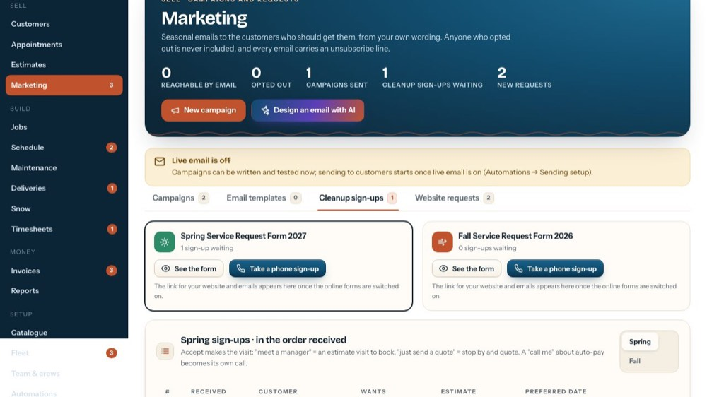
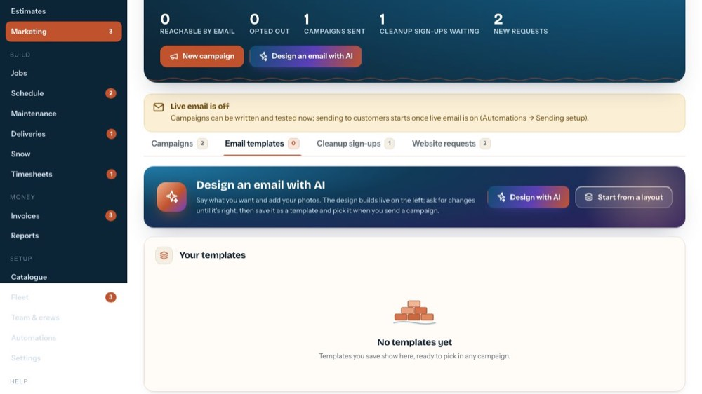
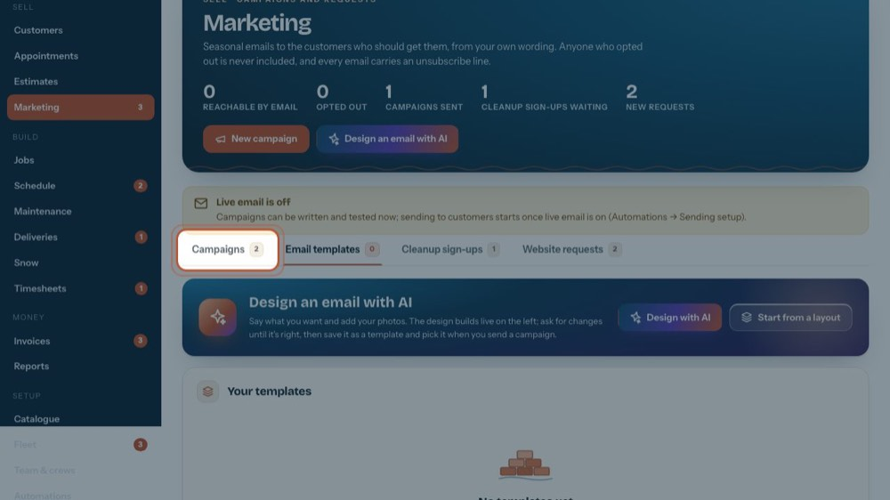
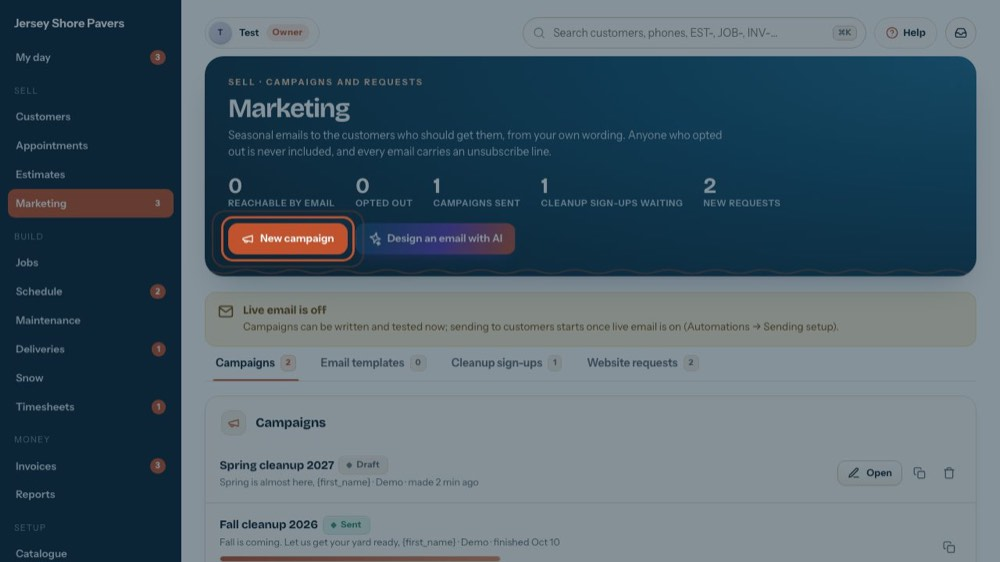
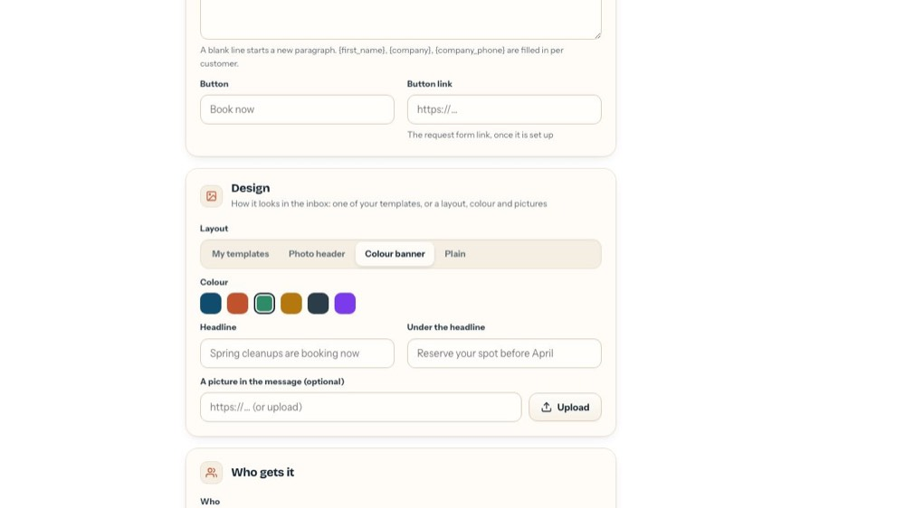
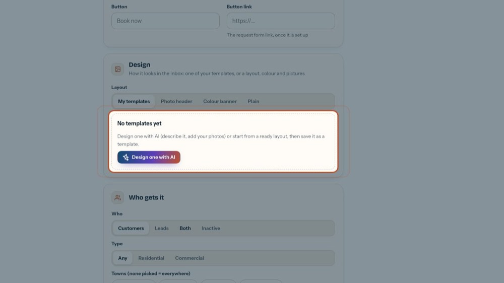
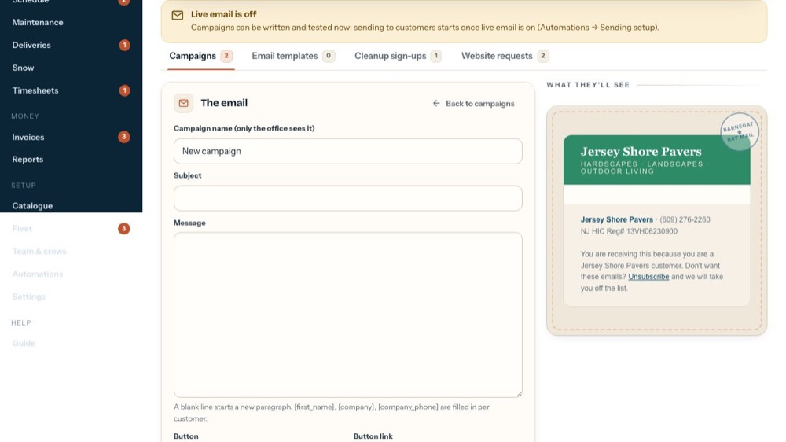

Use a saved email template in a campaign
In the office app, press Help and type use a saved email template in a campaign
: the tour plays on your own screen, with your own data.
-

1Email templates
Every saved template, with a picture of it, who changed it last and how many campaigns use it.
-

2A template
Use in a campaign starts a new campaign with it. Edit opens it in the designer. The pen renames it; the bin deletes it, and campaigns already made with it keep their look.
-

3From any campaign
A campaign can also pick a template in its Design card.
-

4New campaign
Opens the composer.
-

5My templates
In the Design card, pick My templates.
-

6Pick one
Click a template's picture. The preview becomes the template with this campaign's own words, and you can still change the headline or the button colour here.
-

7What they'll see
The email exactly as customers get it, footer and unsubscribe line included.